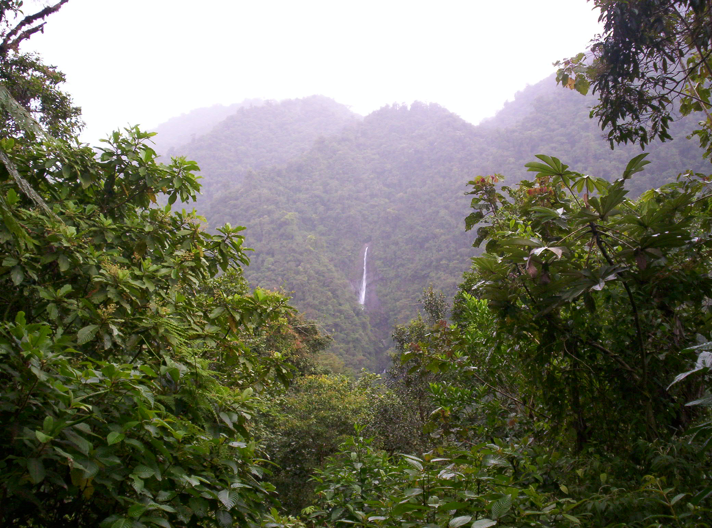

Tapantí National Park, situé dans la Área de Conservación La Amistad Pacífico, dans la partie sud du Costa Rica.
L'écotourisme, que l'on associe au tourisme vert, est une des formes du tourisme durable, plus centrée sur la découverte de la nature (écosystèmes, mais aussi agrosystèmes et tourisme rural), voire d'écologie urbaine (jardins écologiques, Espaces verts écologiques, réserves naturelles urbaines et autres aspects de l'écologie urbaine...).
Né il y a une trentaine d’années, le terme d’écotourisme est un néologisme composé de l'abréviation eco- (écologie) et tourisme. Le mot serait apparu en 1983 avec l'architecte mexicain Héctor Ceballos-Lascuráin. L'écotourisme serait selon lui « Environmentally responsible travel and visitation to relatively undisturbed natural areas, in order to enjoy and appreciate nature (and any accompanying cultural features – both past and present) that promotes conservation, has low visitor impact, and provides for beneficially active socioeconomic involvement of local populations », soit un tourisme avec un faible impact sur son environnement et bénéfique pour les populations hôtes. Le rapport entre l'activité touristique et son impact sur l'environnement est décrit, cependant, pour la première fois par Gerardo Budowski, dans un article intitulé « Tourism and Environmental Conservation : Conflit, Coexistence or Symbiosis ? » (1976). Il est ainsi généralement considéré comme l'inventeur du concept.
La Société Internationale de l’Écotourisme (TIES) donne une définition en 1991: « L’écotourisme est un voyage responsable dans des environnements naturels où les ressources et le bien-être des populations sont préservés », réactualisé en 2015 (« responsible travel to natural areas that conserves the environment, sustains the well-being of the local people, and involves interpretation and education »)
L’écotourisme, dit aussi le tourisme vert, est une des formes du tourisme durable, plus centrée sur la découverte de la nature (écosystèmes, mais aussi agrosystèmes et tourisme rural), voire d’écologie urbaine (jardins écologiques, Espaces verts écologiques, réserves naturelles urbaines et autres sujets du domaine de l’écologie urbaine…).
Des paysages ou des espèces particulières peuvent être observés, tels que des lions ou des éléphants au Kenya, ainsi que l'observation et/ou l'étude des oiseaux ou des baleines, tout en respectant les écosystèmes, voire en contribuant à les restaurer dans une approche volontaire de "remboursement de la dette écologique" générée par ce tourisme qui, par ailleurs, cherche à diminuer son empreinte écologique.
Ce mode de tourisme s'adapte aussi bien aux pays développés comme la France, où il y est d'ailleurs défendu par l'Association française d'écotourisme depuis 2005, ainsi que par d'autres associations nationales de l'écotourisme en Europe et en Australie.
Les 12 et 13 septembre 2008, lors de la Quarante-huitième réunion de la Commission pour les Amériques (Séminaire international sur la gouvernance du tourisme dans les Amériques) à Villahermosa (Mexique), Francesco Frangialli, Secrétaire général de l’Organisation mondiale du tourisme (OMT), a évoqué le fait de définir la notion de "tourisme écologique et durable". En effet, l’OMT a lancé l’édition 2008 de son concours de photos sur le thème de la Journée mondiale du tourisme (JMT) de l'année : « Le tourisme s’engage face au défi du changement climatique ». Les photos primées ont été affichées sur le site de l’OMT sur la Toile et exposées en 2009 aux grands salons professionnels. Dans ce cadre, il a notamment déclaré : « L’écotourisme se veut une réponse « durable » à l’inquiétante montée d’un tourisme de masse insuffisamment conscient des menaces qu’il fait peser sur l’environnement. Le développement d’un tourisme tourné vers une consommation de plus en plus rapide et « rentable » des voyages, où chacun pense avoir le droit de découvrir jusqu’à la parcelle la plus reculée du monde, participe à la menace qui pèse sur le renouvellement des ressources naturelles telles que l’eau douce, les forêts et les récifs coralliens, et met en péril la survie de nombre d’espèces vivantes, trop souvent exposées à la curiosité de touristes s’imaginant dans des zoos à ciel ouvert». M. Frangialli a donc proposé que, le 27 septembre 2008, lors de la Journée mondiale du tourisme, un Groupe de réflexion travaille sur le thème « Le tourisme s’engage face au défi du changement climatique » à Lima (Pérou) afin d’élaborer « une charte écotouristique ».
Aider à faire prendre conscience de la nécessité de préserver le patrimoine naturel et le patrimoine culturel.
L'écotourisme est l'un des secteurs qui connaît le plus fort taux de popularité dans le monde, à l'inverse du tourisme de masse qui dégrade les milieux naturels, en intégrant une dimension éthique et écocitoyenne. Des guides de bonnes pratiques apparaissent, dont pour la prise en compte de la biodiversité dans les hôtels.
L'association des principes de l'écotourisme avec ceux du développement durable (et donc de la conservation de la nature) rencontre les faveurs de nombreux organismes internationaux (ONU, ONG, Gouvernements et leurs agences..). Il doit pour ces derniers satisfaire à plusieurs critères, tels que :
Pour de nombreux pays, l'écotourisme n'est plus préconisé comme une activité marginale destinée à financer la protection de l'environnement mais parce qu'il y est devenu un secteur moteur d'une économie nationale, et un moyen de générer des revenus. Par exemple, dans des pays tels que le Kenya, l'Équateur, le Népal, le Costa Rica et Madagascar, l'écotourisme est devenu la principale source de devises.
Plongée de « contact » avec des raies sauvages. Il a été montré que ce type d'activité pouvait significativement affecter l'environnement de la raie, ainsi que sa santé (marqueurs sanguins de stress en augmentation, et baisse de l'immunité constatée chez les raies en contact avec l'Homme et non chez les raies vivant « normalement » dans les mêmes régions).
Des naturalistes et des scientifiques spécialistes de la biologie de la conservation craignent ou dénoncent des dérives liées à une définition souvent assez souple de l'écotourisme ou au manque d'indicateurs et de critères pour ce domaine relativement nouveau (bien qu'un tourisme naturaliste, d'exploration et d'aventure existe depuis plusieurs siècles). Ils estiment que l'écotourisme justifie trop souvent des hôtels et des infrastructures (routes, parkings, ports, pistes d'atterrissage, etc.) artificiellement imposées ou placées au beau milieu de splendides paysages, au détriment des écosystèmes locaux ; ces nouveaux aménagements nécessitent la création de nouvelles infrastructures (routières, énergétiques, hydrographiques...), potentiellement fragmentantes, génératrices de dérangement et de pollutions, avec des retours d'expérience rarement analysés.
Certains estiment que l'écotourisme doit avant tout sensibiliser les gens à la beauté et à la fragilité de la nature, mais sous ce prétexte, certains opérateurs n'hésitent pas à proposer des parcours en 4×4, des déposes en hélicoptère, des piscines et l'air conditionné sans soucis de leur impact différés sur la faune et la flore ou les ressources naturelles locales. Parfois l'écotourisme se veut plus léger, utile ou scientifique, mais un nombre croissant de voyages aériens ou de croisière emportent, avec une lourde empreinte écologique, des passagers vers l'Arctique ou l'Antarctique ou les lieux de vie de cétacés (whale-watching) (et parfois de raies que l'on cherche à caresser). Il s'agit selon les opérateurs de faire découvrir la beauté des paysages ainsi que la menace que constitue le réchauffement climatique... mais en y contribuant. Ce genre d'activités parfois dite greenwashing par les professionnels du secteur, cache un tourisme de masse conventionnel présenté comme « vert » ; De même, en 2009, une étude a estimé que 13 millions de touristes ont fait des voyages visant notamment à observer des baleines, dauphins et/ou marsouins dans leur habitat naturel. Cette « industrie » a généré en 2009 2,1 milliards de dollars (soit 1,7 milliard d'euros) en contribuant à faire vivre 13.000 personnes dans 119 pays, pas toujours dans les meilleurs conditions de respect de l'environnement, des cétacés selon une revue de la littérature scientifique publiée et de leur santé, notamment dans les activités de nage avec les cétacés ou de contacts physiques avec eux en 2012.
L'écotourisme de masse et parfois à plus petite échelle est confronté à un paradoxe, éventuellement source de dissonance cognitive qui est qu'il peut dégrader ou détruire la ressource qu'il veut faire découvrir.
Il a souvent été lié principalement à un tourisme de découverte ou d'aventure, très orienté vers les pays tropicaux, les plus riches en biodiversité.
Une tendance existe aussi de tourisme de proximité, s'appuyant sur les ressources naturelles proches et en particulier sur les réserves naturelles, les forêts et les zones humides.
Les États-Unis sont réputés constituer le principal réservoir d'écotouristes (plus de 5 millions de personnes chaque année). La majorité des autres écotouristes provient d'Europe et de l'élite de certains pays du Sud. Il serait faux toutefois de croire que l'écotourisme est réservé aux pays en développement. Ce tourisme s'adapte aussi bien aux pays développés comme la France, une position que défend l'Association Française d'Ecotourisme depuis 2005, ainsi que d'autres associations nationales de l'écotourisme en Europe et en Australie.
Les éco-hébergements sont des lieux qui minimisent l'impact sur l'environnement :